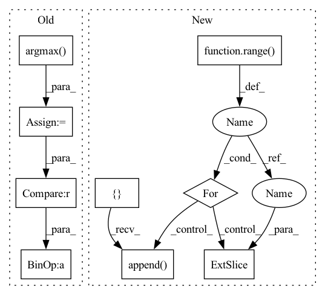

Pattern ID :5686
Before Change
acc = tf.reduce_mean(tf.cast(correct_prediction, tf.float32))
num_classes = scores.shape[-1]
predictions = tf.argmax( scores, axis=-1)
accuracies = []
labels = tf.cast(labels, tf.int64)
accuracy_mask = predictions == labels
for label in range(num_classes):
label_mask = labels == label
num_correct = (accuracy_mask & label_mask).numpy().sum()
num_label = label_mask.numpy().sum()
if num_label == 0:
per_class_accuracy = np.nan
else:
per_class_accuracy = num_correct / num_label
accuracies.append(per_class_accuracy)
// overall accuracy
accuracies.append(np.nanmean(accuracies))After Change
if self.confusion_matrix is None:
return None
accs = []
for label in range( self.num_classes) :
tp = np.longlong(self.confusion_matrix[label, label])
fn = np.longlong(self .confusion_matrix[label , :].sum()) - tp
if tp + fn == 0:
acc = float("nan")
else:
acc = tp / (tp + fn)
accs.append( acc)
accs.append(np.nanmean(accs))
return accsIn pattern: SUPERPATTERN
Frequency: 3
Non-data size: 9
Instances Fragment ID: 19988338
Project Name: isl-org/open3d-ml
Commit Name: 67123f7e9d5dbbe6a73c42ef648093a7d25ace4a
Time: 2021-05-11
Author: sanskaragrawal107@gmail.com
File Name: ml3d/tf/modules/metrics/semseg_metric.py
M Class Name: SemSegMetric
N Class Name: SemSegMetric
M Method Name: acc(1)
N Method Name: acc(3)
M Parent Class: object
N Parent Class: object
M File Name: ml3d/tf/modules/metrics/semseg_metric.py
N File Name: ml3d/tf/modules/metrics/semseg_metric.py
M Start Line: 14
M End Line: 49
N Start Line: 25
N End Line: 55
Before Change
acc = []
f1 = []
for emo_ind in range(4):
preds_i = np.argmax( preds[:, emo_ind], axis=-1)
truths_i = truths[:, emo_ind]
acc.append(torch.sum(truths_i == preds_i ).item() / len(preds))
f1.append(f1_score(truths_i, preds_i, average="weighted"))
else:
preds = np.argmax(preds, axis=-1)After Change
for i in range(total):
preds[i, preds_inds[i]] = 1
accs = []
f1s = []
for i in range( num_emo) :
pred_i = preds[:, i]
truth_i = truths [:, i]
acc = torch.sum(pred_i == truth_i).item() / total
f1 = f1_score(truth_i, pred_i, average="weighted")
accs.append( acc)
f1s.append(f1)
return acc, f1
Fragment ID: 19988358
Project Name: wenliangdai/modality-transferable-mer
Commit Name: 38664b152a63fb703932bd0b32dfdf90fb6b3d48
Time: 2020-06-15
Author: wenliang.dai.1995@gmail.com
File Name: src/evaluate.py
M Class Name: AnonimousClass
N Class Name: AnonimousClass
M Method Name: eval_iemocap(2)
N Method Name: eval_iemocap(3)
M Parent Class:
N Parent Class:
M File Name: src/evaluate.py
N File Name: src/evaluate.py
M Start Line: 147
M End Line: 166
N Start Line: 155
N End Line: 177
Before Change
acc = tf.reduce_mean(tf.cast(correct_prediction, tf.float32))
num_classes = scores.shape[-1]
predictions = tf.argmax( scores, axis=-1)
accuracies = []
labels = tf.cast(labels, tf.int64)
accuracy_mask = predictions == labels
for label in range(num_classes):
label_mask = labels == label
num_correct = (accuracy_mask & label_mask).numpy().sum()
num_label = label_mask.numpy().sum()
if num_label == 0:
per_class_accuracy = np.nan
else:
per_class_accuracy = num_correct / num_label
accuracies.append(per_class_accuracy)
// overall accuracy
accuracies.append(np.nanmean(accuracies))After Change
if self.confusion_matrix is None:
return None
accs = []
for label in range( self.num_classes) :
tp = np.longlong(self.confusion_matrix[label, label])
fn = np.longlong(self .confusion_matrix[label, :].sum()) - tp
if tp + fn == 0:
acc = float("nan")
else:
acc = tp / (tp + fn)
accs.append( acc)
accs.append(np.nanmean(accs))
return accs Fragment ID: 19988349
Project Name: intel-isl/open3d-ml
Commit Name: 67123f7e9d5dbbe6a73c42ef648093a7d25ace4a
Time: 2021-05-11
Author: sanskaragrawal107@gmail.com
File Name: ml3d/tf/modules/metrics/semseg_metric.py
M Class Name: SemSegMetric
N Class Name: SemSegMetric
M Method Name: acc(1)
N Method Name: acc(3)
M Parent Class: object
N Parent Class: object
M File Name: ml3d/tf/modules/metrics/semseg_metric.py
N File Name: ml3d/tf/modules/metrics/semseg_metric.py
M Start Line: 14
M End Line: 49
N Start Line: 25
N End Line: 55